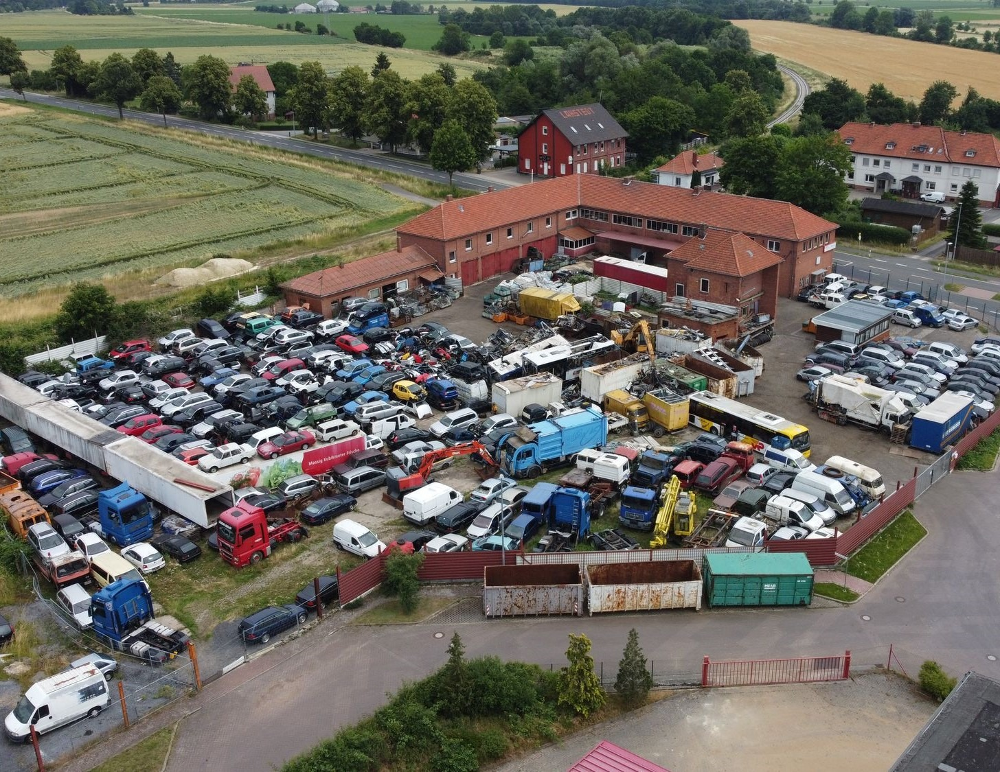
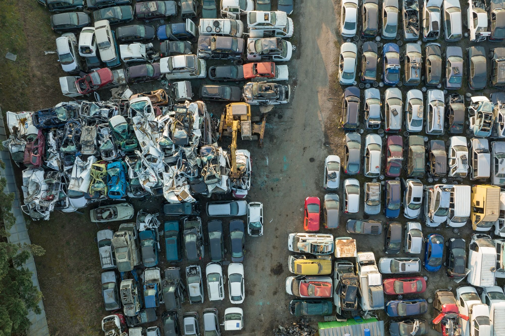
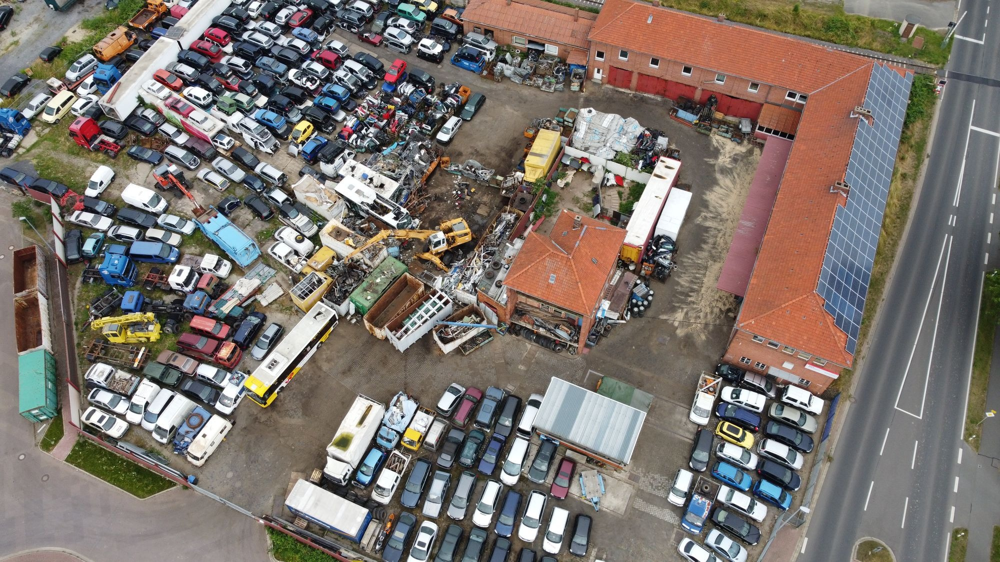

Zertifizierte Autoverwertung
Altfahrzeuge werden sauber, dokumentiert und nach geltenden Vorgaben verwertet.
Ihr zuverlässiger Partner für Autoentsorgung, Autoabholung, Ersatzteile und Schrottannahme in Ilsede.
Zertifizierter
Betrieb

Schnelle
Abholung

Umweltgerechte
Verwertung

Große Auswahl
an Ersatzteilen
Wir verbinden schnelle Abwicklung mit fachgerechter Demontage, transparenter Beratung und nachhaltiger Wiederverwertung.
Altfahrzeuge werden sauber, dokumentiert und nach geltenden Vorgaben verwertet.
Wir klären Standort, Zustand und Termin persönlich und unkompliziert.
Schadstoffe, Flüssigkeiten und verwertbare Teile werden getrennt behandelt.
Gebrauchte Teile sparen Kosten und verlängern die Nutzung vorhandener Ressourcen.
Kurze Wege, direkte Auskunft und faire Konditionen für Fahrzeuge und Schrott.
Die Autoverwertung O. Kuhnert GmbH & Co. KG steht für zuverlässige Autoentsorgung und hochwertiges Recycling in Ilsede. Unser erfahrenes Team kümmert sich um Fahrzeugannahme, Abholung, Demontage und Wiederverwertung.
Unser Ziel ist es, Umweltbelastungen zu minimieren, verwertbare Materialien sinnvoll weiterzuführen und Kunden eine einfache, transparente Abwicklung zu bieten.

Alles, was Sie für Entsorgung, Ankauf und Ersatzteile brauchen, direkt aus einer Hand.
Fachgerechte Annahme und Entsorgung von Altfahrzeugen, Unfallwagen und nicht mehr fahrbereiten Autos.
Anfrage stellen →Wir kaufen Fahrzeuge an und stimmen eine Abholung nach Zustand, Standort und Termin ab.
Daten senden →Umweltgerechte Demontage, Sortierung und Verwertung von Materialien und Fahrzeugteilen.
Ablauf ansehen →Gebrauchte Qualitätsersatzteile für viele Fahrzeugtypen, auf Anfrage geprüft und verfügbar.
Mehr erfahren →Eine klare Abwicklung vom ersten Kontakt bis zur fachgerechten Verwertung.
Fahrzeugdaten, Standort und Anliegen übermitteln.
Wir klären Preis, Abholung oder Annahme am Hof.
Papiere, Zustand und Übergabe werden geprüft.
Das Fahrzeug wird demontiert, sortiert und recycelt.

Dank umfangreicher Lagerhaltung verfügen wir über ein breites Sortiment gebrauchter Autoteile. Wenn Sie Ersatzteile benötigen, fragen Sie uns mit Marke, Modell, Baujahr und genauer Beschreibung des Teils an.
Ersatzteil anfragen →Egal ob Fahrzeug abgemeldet, Unfallwagen, Motorschaden oder nicht mehr fahrtüchtig: Wir nehmen es gerne an und kümmern uns um Transport, Demontage und umweltgerechte Entsorgung.
Autoabholung anfragen →
Fachgerechte Annahme, Demontage und Verwertung.
Direkter Kontakt statt langer Umwege.
Von Anfrage bis Übergabe klar geführt.
Ressourcen schonen durch Recycling und Ersatzteile.
Wählen Sie Ihr Anliegen und senden Sie uns Ihre Anfrage - wir melden uns zeitnah.